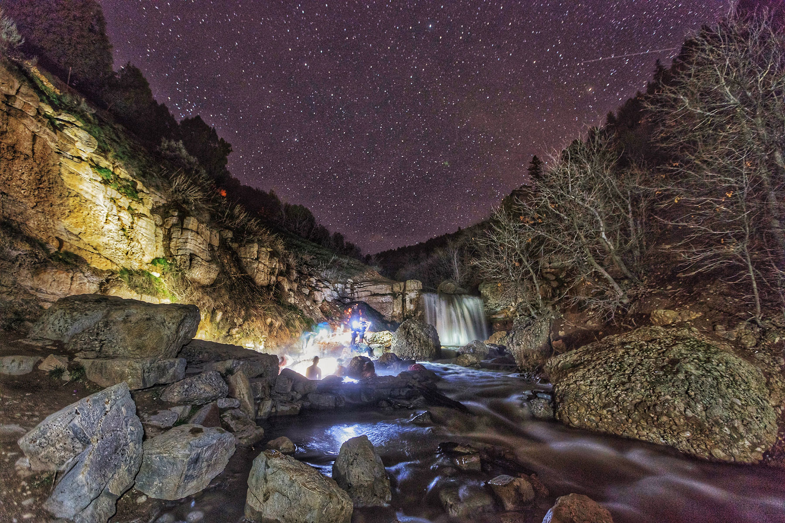
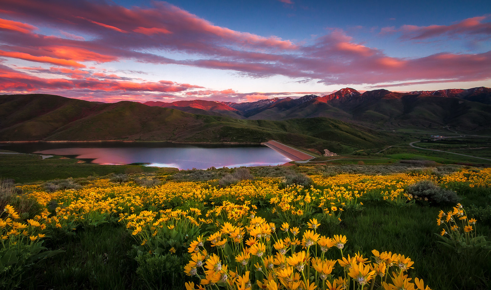

Each national park serves as a centerpiece for a travel region that invites visitors to dive into the beauty of not just the iconic parks, but also the state parks, national monuments, and charming small towns that enrich Southern Utah.

| National Park | Area (sq miles) | Elevation (ft) | Notable Attractions |
|---|---|---|---|
| Zion National Park | 146 | 8,726 | The Narrows, Angels Landing |
| Bryce Canyon National Park | 56 | 9,105 | Sunrise Point, Queen's Garden Trail |
| Arches National Park | 76 | 5,653 | Delicate Arch, Fiery Furnace |
| Canyonlands National Park | 527 | 7,428 | Island in the Sky, Needles District |
| Capitol Reef National Park | 241 | 6,498 | Fruita Historic District, Waterpocket Fold |
Beyond the well-known national parks, Utah is home to numerous hidden gems waiting to be explored. From secluded hiking trails to picturesque small towns, these lesser-known attractions offer unique experiences that highlight the state's diverse beauty and rich culture. Explore the secrets of Utah's hidden beauty.
Utah's landscapes are renowned for their breathtaking beauty and unique geological features. From the stunning formations of Arches National Park to the dramatic canyons of Canyonlands, each site tells a story of nature's artistry and invites visitors to connect with the extraordinary environment.
Before embarking on your journey to explore Utah's breathtaking national parks and iconic landscapes, it's essential to plan ahead. Start by researching the parks you wish to visit, checking weather conditions, and familiarizing yourself with park regulations. Packing wisely is crucial! Don't forget to prepare for safety, as well as a camera to capture the stunning scenery. By taking these steps, you can ensure a safe and enjoyable experience amidst Utah's natural beauty.